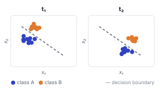
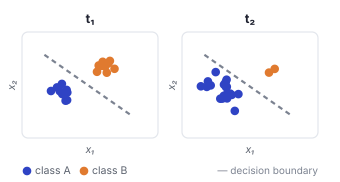
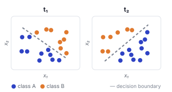
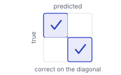
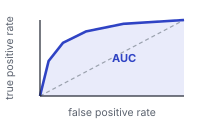
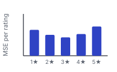

// 1 temporal distribution shift
Machine learning models are typically trained under the assumption that training and test data are drawn from the same distribution. In practice this rarely holds: as a system operates over months, years, or decades, the data-generating process evolves, producing a temporal distribution shift between training and deployment. This shift takes three forms, which commonly co-occur.

Covariate shift
The inputs \(P(X)\) drift into new regions while the labelling rule \(P(Y \mid X)\) stays fixed: the points move, the decision boundary does not.

Label shift
The class balance \(P(Y)\) changes while each class keeps its appearance \(P(X \mid Y)\): here one class comes to dominate, though the boundary is unchanged.

Concept drift
The labelling rule \(P(Y \mid X)\) itself changes: the points stay put, but the decision boundary swings, so identical inputs switch class.
// 2 the datasets
We study these three forms of drift in three datasets, chosen so that the modality, the task, and the dominant form of drift differ across datasets, and so that each spans a decade or more: Yearbook (photographs), Amazon Reviews (product reviews), and arXiv (research papers).


// 3 the models
On every dataset we train the same set of architectures, each encoding a different inductive bias over its input. Some are trained end to end; others freeze a pretrained encoder and train only a linear head on its features. Varying the inductive bias and the use of pretraining lets us measure how each shapes temporal robustness.
3.1 Image models
On Yearbook, four families are trained end to end from raw pixels: a multilayer perceptron, a convolutional network, a residual network, and a vision Transformer, each at three sizes (S, M, L). Nine pretrained vision encoders are evaluated as frozen backbones, each with a single linear layer on top.


3.2 Text models
Amazon Reviews and arXiv share the same text architectures, differing only in the output layer and loss. The four trained bodies (feed-forward, convolutional, recurrent, and Transformer) do not learn token embeddings; each is trained over frozen RoBERTa-base representations. The remaining models train a single linear head on a frozen pretrained encoder.

// 4 the protocol
To compare these models under temporal shift, we evaluate every one with a single protocol based on temporal drift matrices. We divide each dataset's timeline into \(K\) disjoint intervals \(T_1, \dots, T_K\). For training cutoff \(i\), a model \(f_i\) is fit on the cumulative history \(\mathcal{D}_{\le i} = \bigcup_{j \le i} \mathcal{D}_j\), all data observed up to interval \(i\), which mirrors realistic deployment where models are periodically retrained on the available history. The temporal drift matrix \(M \in \mathbb{R}^{K \times K}\) records \[ M_{ij} = \mathrm{perf}(f_i, \mathcal{D}_j), \] the performance of a model trained through period \(i\) when evaluated on data from period \(j\). Every reported cell is averaged over distinct model seeds before any model, family, or cohort aggregation: 5 seeds for Yearbook and 3 seeds for arXiv and Amazon Reviews. This repeated-seed aggregation reduces sensitivity to random initialization and training-order stochasticity while keeping dataset construction fixed.

The matrix shows how performance degrades, or improves, as the temporal gap between training and evaluation widens.
To avoid leakage, in-distribution cells (\(j \le i\)) are scored only on the held-out validation and test splits of \(\mathcal{D}_j\); future cells (\(j > i\)) use all of \(\mathcal{D}_j\), since none of it was seen during training. The loss matches each task's imbalance: cross-entropy for Yearbook, a class-weighted binary cross-entropy over the \(C = 7\) arXiv subjects, and an inverse-frequency-weighted MSE over the five Amazon rating levels.
// 5 metrics
To compare models across time and architectures, we require scalar performance measures that are both aligned with the task and robust to the class imbalance present in each dataset. The metric that populates the entries of the drift matrix \(M\) differs across the three datasets, reflecting their respective label structures.

For binary classification, standard accuracy is appropriate given the two classes and the roughly balanced label distribution.

For multi-label classification, the mean Area Under the ROC Curve is threshold-independent and remains meaningful under severe label imbalance; uniform averaging over the \(C = 7\) subjects prevents frequent categories from dominating.

The rating distribution is skewed toward five-star reviews, so a global MSE would reflect the majority class; averaging the squared error within each rating level keeps changes visible across the full spectrum.